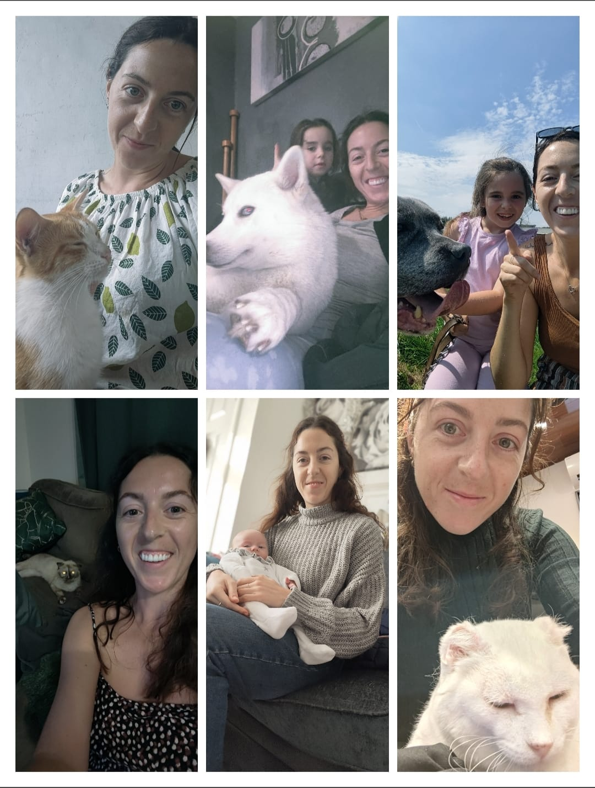

About Me
Hello! I'm Rebecca — a trained teacher and lifelong animal lover. I’ve fostered pets, cared for children, and supported families with dependable help. These days, I work part-time online from home, which gives me the flexibility to offer reliable, one-on-one care for your pets, home, and little ones. In my free time, I enjoy walking, running, and hiking — so your pets will always get the active attention they need!
Pet & Dog Sitting
I offer personalised, one-to-one care for pets in their own home — whether dogs, cats, or other furry friends. Services include walks, feeding, fresh water, play, and welfare checks.
Rates:
• £15 for a 1-hour visit with walk, feeding, and water check
• £25 for two visits/day or two hours total
• £40 for evening, overnight, and morning care with a walk
Discounts available for longer bookings. No group dog walks — only individual care or household pairs.
Feel free to contact me to discuss your pet’s needs.
Free meet and greet is available — message to book in!
Baby Sitting
Reliable and gentle baby sitting for evenings or daytime support. I’m DBS checked, teacher trained, and have experience caring for children of all ages — including newborns. I offer calm, trustworthy care tailored to your baby’s routine.
Rates: Please contact me for personalised pricing based on duration and location.
Availability: Flexible and part-time, including evenings and weekends.
Child Minding
Flexible child care in your home for toddlers to teens. With a teaching background and experience supporting children with special needs, I aim to create a fun, safe, and understanding environment for every child.
Rates: Vary depending on needs — message me for details.
Activities can include walks, outdoor play, crafts, reading, homework help and more.
Coverage: Leeds and Bradford areas only.
FAQ
- What can I expect from a visit? Each visit is personalized to your needs and includes feeding, water checks, walks, and companionship.
- How long will you be there? Visits are booked by the hour or overnight, depending on your package.
- Do you cover my area? I currently cover the Leeds and Bradford areas only.
- Can I meet you beforehand? Absolutely! I offer a free meet and greet so we can ensure it’s a good fit.
- Do you have insurance? Yes, I have home and pet liability insurance to cover incidents and emergencies.
- Are you a registered vet or nurse? No, I’m not qualified to administer medical treatments. If your pet requires medication, please inform me in advance so we can discuss suitable arrangements.
- Do you drive? Yes, I drive and have access to transport, making it easy to reach you when needed.
- Are you DBS checked? Yes, I hold a current DBS check for your peace of mind.
- Do you have experience with children with additional needs? Yes, I have experience supporting children with special needs and offer a calm, understanding approach.
Testimonials
“Rebecca has been absolutely fantastic. Our pets adore her and we always feel at ease knowing they’re in good hands.”
– Sarah, Pudsey
“Warm, trustworthy, and so attentive. Highly recommended!”
– James & Lila, Eccleshill
Contact
📧 Email: Rebeccamcgill2@hotmail.co.uk
📞 WhatsApp / Call: 07721 253624